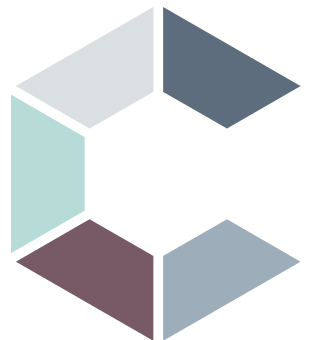
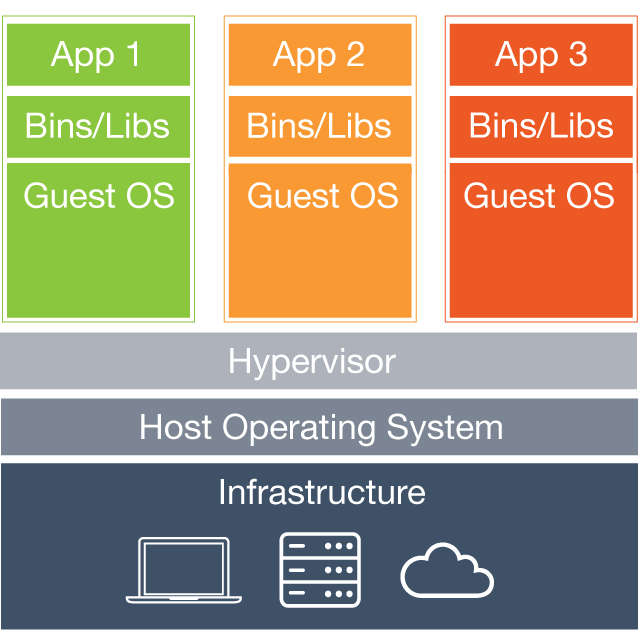
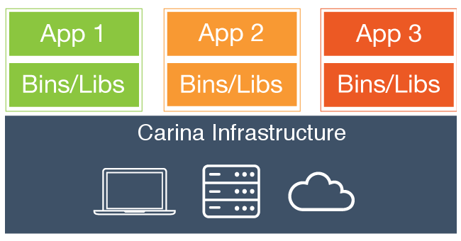
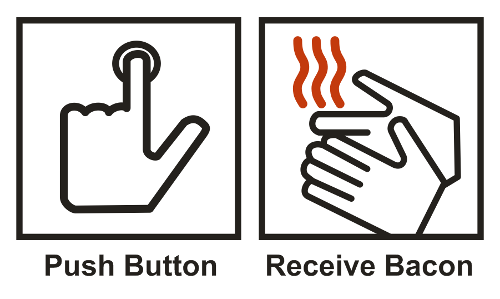

Introduction to Carina

by Carolyn Van Slyck
Think above the whale

Virtual Machines
Docker

Carina
Push Button → Receive Docker

Signup at getcarina.com

TTD - Time to Docker
$ carina ls
ClusterName Flavor Segments AutoScale Status
mccluster container1-4G 1 false active
playground container1-4G 1 false active
$ eval $(carina env mccluster)
PS> carina env mccluster | iex
$ docker run --name whoa --detach --publish 80:8080 rackerlabs/whoa
24c1bdc54427d50475c587aaa32a505c9d825aa7c7cc0b411835672d384e5f60
$ docker port whoa 8080
172.99.78.29:80
$ curl $(docker port whoa 8080)
🎉 Whoa! 🎉